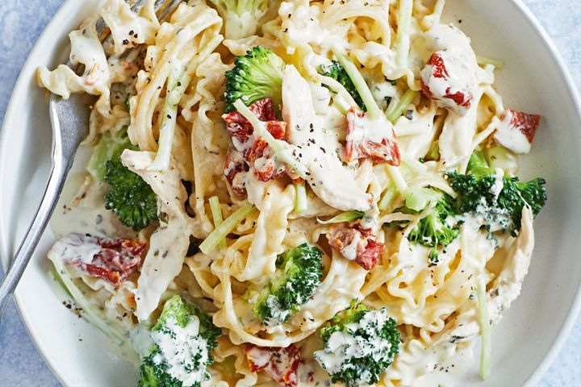

Chicken and Brocolli Pasta

Ingredients
- 350g broccoli, cut into small florets, stems cut into matchsticks
- 300g dried curly fettuccine pasta
- 1⁄2 barbecued chicken, skin and bones removed, meat coarsely shredded
- 2 x 80g Boursin Garlic & Herbs cheese
- 125g (3⁄4 cup) sun-dried tomatoes, coarsely chopped
Steps
- Bring a large saucepan of water to the boil.
Add the broccoli and cook for 2 minutes or until bright green and tender crisp.
Use a slotted spoon to transfer the broccoli to a bowl.
Add the pasta to the boiling water and cook following packet directions or until al dente.
- While the pasta cooks, heat a frying pan over medium-high heat.
Add chicken, broccoli, cheese and tomato.
Use a ladle to transfer 250ml (1 cup) pasta cooking water to the chicken mixture.
Stir until the cheese melts. Continue to cook, tossing, for 2-3 minutes or until heated through.
- Drain the pasta and add to the broccoli mixture. Toss until well combined. Season.